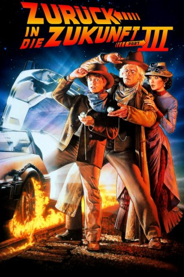

gesehen am 30.08.2016
gesehen am 30.08.2016Alternativ: Back to the Future Part III gesehen am 30.08.2016
 
 IMDB-Wertung: 7.4 / 10
IMDB-Wertung: 7.4 / 10  Metascore:
Metascore: 
Als Dr. Emmett Brown im Jahre 1955 bei einem Landeversuch mit dem DeLorean vom Blitz getroffen wird, katapultiert ihn die Zeitmaschine in das Jahr 1885. Sofort schreibt er Marty McFly einen Brief, in dem er seinen Freund darüber unterrichtet, dass es ihm gut gehe und er seinen Lebensabend gern in dieser Epoche verbringen würde. Dank des zuverlässigen Postsystems erreicht der Brief Marty 70 Jahre später direkt nachdem dieser mit ansehen musste, wie die Zeitmaschine im bewölkten Nachthimmel von Hill Valley verschwand. Kurz darauf findet Marty allerdings heraus, dass der schrullige Wissenschaftler eine Woche nach seiner Ankunft im Wilden Westen erschossen wird. Um dies zu vereiteln, begibt er sich kurzerhand selbst auf die Reise in das Jahr 1885.
Jahr: 1990
Dauer: 118 Minuten
FSK: 12
Land: USA Studio: Universal PicturesTonspuren:
Untertitel: Deutsch,
Auflösung: 720p (1280×688) Größe: 4474 MB
Genre: Abenteuer, Komödie, Sci-Fi, Western
Regisseur:  Robert Zemeckis
Robert Zemeckis
Drehbuch: Robert Zemeckis, Bob Gale, Robert Zemeckis, Bob Gale, Bob Gale
Soundtrack: Alan Silvestri
Darsteller:
 Michael J. Fox als Marty McFly / Seamus McFly
Michael J. Fox als Marty McFly / Seamus McFly Thomas F. Wilson als Buford 'Mad Dog' Tannen / Biff Tannen
Thomas F. Wilson als Buford 'Mad Dog' Tannen / Biff Tannen Lea Thompson als Maggie McFly / Lorraine McFly
Lea Thompson als Maggie McFly / Lorraine McFly Matt Clark als Chester the Bartender
Matt Clark als Chester the Bartender Richard Dysart als Barbwire Salesman
Richard Dysart als Barbwire Salesman Pat Buttram als Jeb, Saloon Old-Timer #3
Pat Buttram als Jeb, Saloon Old-Timer #3 Harry Carey Jr. als Zeke, Saloon Old-Timer #2
Harry Carey Jr. als Zeke, Saloon Old-Timer #2 Dub Taylor als Levi, Saloon Old-Timer #1
Dub Taylor als Levi, Saloon Old-Timer #1 Marc McClure als Dave McFly
Marc McClure als Dave McFly Sean Sullivan als Buford Tannen's Gang
Sean Sullivan als Buford Tannen's Gang Mike Watson als Buford Tannen's Gang
Mike Watson als Buford Tannen's Gang Bill McKinney als Engineer
Bill McKinney als Engineer Flea als Douglas J. Needles
Flea als Douglas J. Needles Marvin J. McIntyre als Mortician
Marvin J. McIntyre als MorticianDatei: X:\3-Trilogie(N-Z)\Zurück in die Zukunft\Zurück in die Zukunft 3 (1990, FSK12, 1280x688).mkv seit 14.02.2015
Festplatte: HD Collection-3(N-Z)-6(A-Z)
 Alle Filme aus Gruppe '3-Trilogie(N-Z)\Zurück in die Zukunft'
Alle Filme aus Gruppe '3-Trilogie(N-Z)\Zurück in die Zukunft'